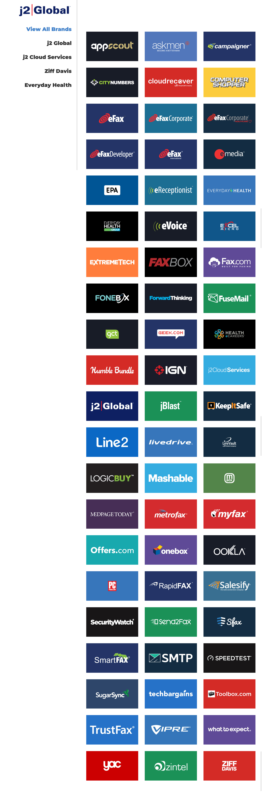

J2Global.com
About The Project

While working for j2 Global my first big development project was to create a new version of our Creative Hub repository. The repository would act as a Hub for the various art assets for the different business units owned by j2 Global. This includes but is not limited to: logos, style guides, and design assets created for the various j2 companies.
Site needs:
- Easy to keep up-to-date
- Download design assets
- Link out to the original Jira Ticket for the projects
- Custom filtering of design assets
The previous version of the Hub had several bottle necks that made maintaining it all but impossible. The biggest roadblock was the actual updating of the content as it required a the user know and understand HTML, CSS, and other web technologies to be able to update the website. Which created a bottleneck as not all team members possessed these skills required to do the updates. So this fell to one team member and the amount of projects was too much for one person to handle by themself in addition to their day to day responsibilities. It quickly became unmanageable and outdated. Which caused it to fall into disuse by the business units.
The main challenge was too setup a new platform that would allow for non-coders to be able to easily upload and tag their artwork assets for display. To achieve this I chose WordPress as the platform. I have long been a fan of WordPress due to it’s modularity and flexibility as a platform. As well as having a user friendly back end that can be used by coders and non coders alike. Once I chose the platform I moved forward with designing the look and feel of the Hub using Adobe XD to rapidly wireframe and outline the structure of the various pages. Once I received approval for the comps I use the free Twentyfifteen Theme provided by WordPress as a starting point and then customized it to do all the things that I needed it to do.
This project gave me the opportunity to learn about and implement regular expressions into my jQuery scripts. It was a bit daunting at first but I now have a deep respect and love of regular expressions. Their flexibility in creating dynamic search patterns that can be as specific or as general as you may need has been a game changer for me in writing clean and compact code that executes efficiently.
For this project I needed to have the assets on the hub link back to their original Jira Ticket number. This was made more complicated by the fact that there was not a standard file naming convention for assets prior to this. So what I had to do was isolate the parts of the file name that pertained to the Jira Ticket. Store them in an array and then append them to the URL of an href tag that was then inserted under the asset image.
I then took it a step further and also provided a download button for the assets directly on the hub. However we had a range of different media types. So I first had to create the logic to define the type of media asset based on the title of the page that it resided on. I then needed to create a button and insert it just below the media assets on the hub. I did this by using another jQuery function to create the button, grab the file name, append the filename with the correct file extension based on the asset type to the href tag.
The last bit of functionality that was requested was the ability to sort and filter the assets by several key categories including; year, location, and product. In order to achieve this I had to create a tag hierarchy and standardization so that it would work for our immediate needs as well as our future needs. This ended up with me creating 1,400 different tags that can be applied to any and all media assets so that they can be maintained and sorted into their proper sections and categories.
All in all I was very happy with the outcome of this project and was given an internal company award for going above and beyond to create a solution to a business problem that increased efficiency and communication between stakeholders. However, more importantly I learned new skills in jQuery, regular expressions, and CSS Animations that have strengthened my skillset and given me more confidence in my abilities.